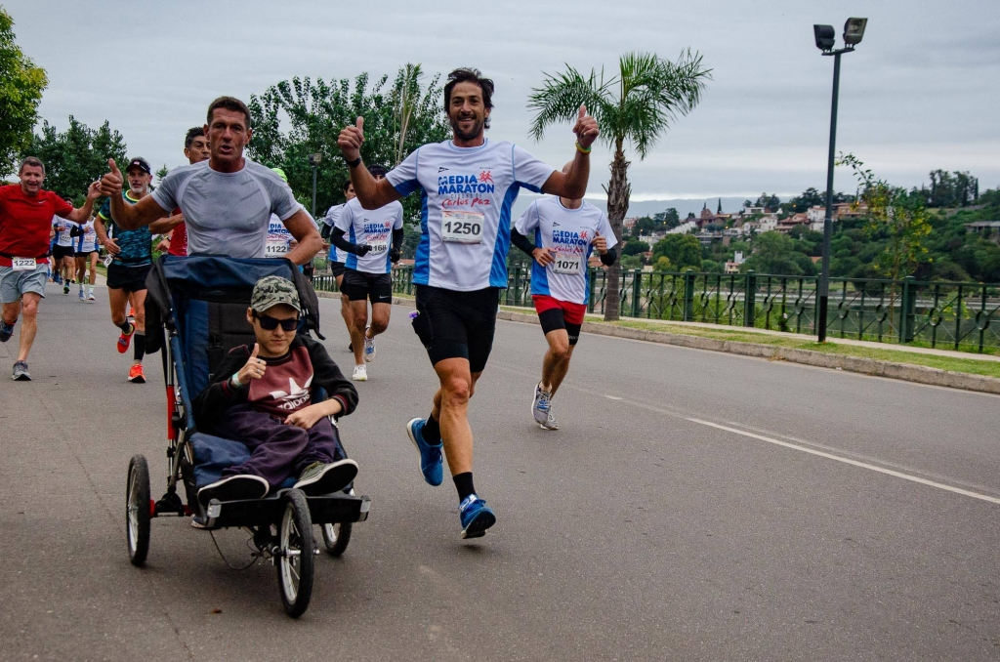

¿Quién soy?
Hola, me llamo Braian Micheli, tengo 17 años y esta es mi historia.
Mis comienzos
Empecé a participar en maratones a la edad de 6 años por haber visto una propaganda de una maratón que se realizaría en mi ciudad (San Francisco). Los requisitos para entrar eran simples: queres correr, y llevar utiles escolares para los más necesitados. Mi mamá y yo, sin tener entrenamiento participamos y terminamos la misma con un tiempo de 53min. Cabe aclarar que eran 5KM, pero por la razón anteriormente mencionada, costo bastante.

Trayectoria
A lo largo de 10 años he participado en muchas maratones, he ganados premios, reconimientos y demas. A continuación voy a nombrar algunas de ellas.
- 42KM Buenos Aires(x5)
- 42KM Rosario(x1)
- 21KM Buenos Aires(x4)
- 21KM Rafaela(x2)
- 21KM San Francisco(x1)
Motivación
Siempre tuve la necesidad de hacer algo que me llenara. De chico siempre me gusto el deporte y de cierta manera hacer ese algo que represantara un reto para mi, obviamente en este caso era físico. Pocos años despues, el recibimiento de la gente iba más allá de un "corriste bien", hasta cierto punto se volvió un ámbito muy familiar y parecía dejar de ser algo netamente deportivo. Recuerdo que en uno de los primeros 42KM en plena maratón, se acercó un maratonista keniata y me dijo algo en su idioma, pero entendí con solo ver su cara, que se trataban de buenas palabras. Con el tiempo he tenido muchas experiencias y momentos que los agradezco con todo mi ser. Ahora entiendo que todo este párrafo se puede resumir a que mi motivación siempre fue y será la compania.